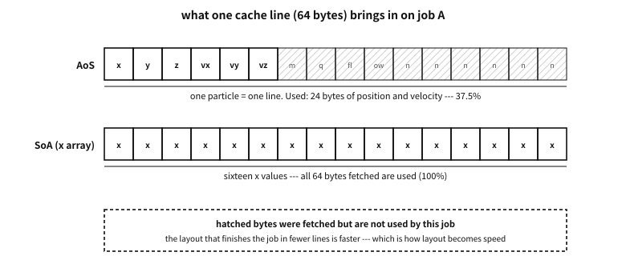

51 Data layout and the cache — an array of structs, or a struct of arrays?
What to know first
Looking back
In chapter 12 we measured that reading the same number of values takes several times as long when only the order changes. The order, we thought, is set by the algorithm. Does how the data is laid out set the order too?
A. It does, and usually before the algorithm does. The machine does not fetch values one at a time but a cache line at a time — 64 bytes on this machine. How many of those 64 bytes are actually used is decided by the layout of the data. The same loop doing the same work uses a different share of the bytes it fetched depending on whether structs were lined up in an array or each field was given an array, and that share turns straight into speed.
The need for this chapter, and its context
By the end of this chapter
The questions this chapter answers
- Then why not write all data as SoA from the start?
51.1 What data layout is — the same data, another order#
Data layout is the choice of in what order the same data is laid out in memory. Say there are a million particles, each with a position, a velocity, a mass and a name. There are three main ways to lay them out.
| Name | Shape | Order in memory |
|---|---|---|
| Array of structures (AoS) | struct particle p[N]; | all fields of particle 1, all fields of particle 2, … |
| Structure of arrays (SoA) | struct { float x[N], y[N], … }; | every particle’s x, every particle’s y, … |
| Mixing in blocks (AoSoA) | struct { float x[8], y[8], … } p[N / 8]; | the x of 8 particles, the y of those 8, … then the next 8 |
Table 51.1 — Three ways to lay out the same data
AoS is C’s natural shape. It is the “array of structs” of chapter 48, and most code starts this way. SoA gives each field an array of its own. AoSoA is in between — SoA inside small blocks, AoS between the blocks.
51.1.1 Why order is speed#
The point of chapter 12 again, in one line: the machine fetches cache lines, not bytes. On the machine this book measures, a cache line is 64 bytes. To read one float (4 bytes), the whole 64 bytes containing it arrive.
So the question to ask is “of the 64 bytes fetched, how many are used?”. This book calls that the utilisation ratio. A loop that only updates positions, walking through 64-byte particle structs, uses 24 bytes of position and velocity per line and throws 40 away — a utilisation ratio of 37.5%. Walk through the x array of an SoA and all 64 bytes of a line are x — 100%. For the same amount fetched, the higher ratio finishes the same work in fewer lines.

Figure 51.1 — On job A, only 37.5% of an AoS line is used; every byte of an SoA x line is.
51.2 Measuring it — two jobs, three layouts#
As this book always does, we measure. A million particles in three layouts, given two jobs:
- Job A: move every particle — add the velocity to the position. Uses 6 of the 16 fields.
- Job B: read every field of particles picked at random.
examples-en/data-layout/aos_soa/aos_soa.c
/* The same particles laid out three ways, and two jobs done on each.
★ This program measures time, so its numbers differ by machine and by run.
Only ratios are printed --- only the conclusion is meant to last. */
#include <stdint.h>
#include <stdio.h>
#include <stdlib.h>
#include <time.h>
/* about a million particles: 64 MiB as AoS, far bigger than the cache */
#define N (1u << 20)
#define ROUNDS 5
#define PICKS (1u << 18)
/* (1) AoS: one struct per particle, everything together --- 64 bytes, one cache line */
struct particle {
float x, y, z, vx, vy, vz;
float mass, charge;
uint32_t flags, owner;
char name[24];
};
static_assert(sizeof(struct particle) == 64);
/* (2) hot/cold split: what the update loop needs, apart from what it does not */
struct hot { float x, y, z, vx, vy, vz; }; /* 24 bytes */
struct cold { float mass, charge; uint32_t flags, owner; char name[24]; };
/* (3) SoA: one array per field */
struct particles { float *x, *y, *z, *vx, *vy, *vz, *mass; };
static struct particle *aos;
static struct hot *hot;
static struct cold *cold;
static struct particles soa;
static uint32_t *pick;
static volatile float sink;
static double now(void) { return (double)clock() / CLOCKS_PER_SEC; }
/* job A: move every particle --- touches 6 of the 16 fields */
static double move_aos(void)
{
double t = now();
for (uint32_t i = 0; i < N; i++)
{ aos[i].x += aos[i].vx; aos[i].y += aos[i].vy; aos[i].z += aos[i].vz; }
return now() - t;
}
static double move_hot(void)
{
double t = now();
for (uint32_t i = 0; i < N; i++)
{ hot[i].x += hot[i].vx; hot[i].y += hot[i].vy; hot[i].z += hot[i].vz; }
return now() - t;
}
static double move_soa(void)
{
double t = now();
for (uint32_t i = 0; i < N; i++) soa.x[i] += soa.vx[i];
for (uint32_t i = 0; i < N; i++) soa.y[i] += soa.vy[i];
for (uint32_t i = 0; i < N; i++) soa.z[i] += soa.vz[i];
return now() - t;
}
/* job B: look at scattered particles, all of their fields at once */
static double look_aos(void)
{
double t = now(); float acc = 0;
for (uint32_t k = 0; k < PICKS; k++) { const struct particle *p = &aos[pick[k]];
acc += p->x + p->y + p->z + p->vx + p->vy + p->vz + p->mass; }
sink = acc; return now() - t;
}
static double look_soa(void)
{
double t = now(); float acc = 0;
for (uint32_t k = 0; k < PICKS; k++) { uint32_t i = pick[k];
acc += soa.x[i] + soa.y[i] + soa.z[i] + soa.vx[i] + soa.vy[i] + soa.vz[i]
+ soa.mass[i]; }
sink = acc; return now() - t;
}
static int cmp(const void *a, const void *b)
{ double x = *(const double *)a, y = *(const double *)b; return (x > y) - (x < y); }
static double median(double (*job)(void))
{
double r[ROUNDS];
job(); /* warm up; thrown away */
for (int i = 0; i < ROUNDS; i++) r[i] = job();
qsort(r, ROUNDS, sizeof *r, cmp);
return r[ROUNDS / 2];
}
int main(void)
{
aos = calloc(N, sizeof *aos);
hot = calloc(N, sizeof *hot); cold = calloc(N, sizeof *cold);
float **f[] = { &soa.x, &soa.y, &soa.z, &soa.vx, &soa.vy, &soa.vz, &soa.mass };
for (size_t k = 0; k < sizeof f / sizeof f[0]; k++) *f[k] = calloc(N, sizeof(float));
pick = malloc(PICKS * sizeof *pick);
if (!aos || !hot || !cold || !pick || !soa.x || !soa.y || !soa.z
|| !soa.vx || !soa.vy || !soa.vz || !soa.mass)
{ puts("out of memory"); return 1; }
uint64_t rng = 0x9E3779B97F4A7C15u;
for (uint32_t k = 0; k < PICKS; k++) {
rng ^= rng << 13; rng ^= rng >> 7; rng ^= rng << 17;
pick[k] = (uint32_t)(rng >> 32) % N;
}
for (uint32_t i = 0; i < N; i++) {
float v = (float)(i % 7) * 0.25f;
aos[i].vx = aos[i].vy = aos[i].vz = v;
hot[i].vx = hot[i].vy = hot[i].vz = v;
soa.vx[i] = soa.vy[i] = soa.vz[i] = v;
}
double a = median(move_aos), h = median(move_hot), s = median(move_soa);
double la = median(look_aos), ls = median(look_soa);
printf("%u particles; a struct is %zu bytes, a hot part %zu bytes\n\n",
N, sizeof *aos, sizeof *hot);
puts("job A: move every particle (6 of the 16 fields)");
if (s > 0 && h > 0) {
printf(" AoS took %.1f times as long as SoA\n", a / s);
printf(" hot/cold split took %.1f times as long as SoA\n", h / s);
} else puts(" the clock is too coarse on this machine to tell them apart");
puts("job B: read every field of particles picked at random");
if (la > 0) printf(" SoA took %.1f times as long as AoS\n", ls / la);
else puts(" the clock is too coarse on this machine to tell them apart");
puts("\n(ratios only: they change with the machine, the compiler and the run.)");
free(aos); free(hot); free(cold); free(pick);
for (size_t k = 0; k < sizeof f / sizeof f[0]; k++) free(*f[k]);
return 0;
}
Output
1048576 particles; a struct is 64 bytes, a hot part 24 bytes
== -O0
job A: move every particle (6 of the 16 fields)
AoS took 1.0 times as long as SoA
hot/cold split took 1.0 times as long as SoA
job B: read every field of particles picked at random
SoA took 1.8 times as long as AoS
== -O2
job A: move every particle (6 of the 16 fields)
AoS took 2.4 times as long as SoA
hot/cold split took 1.1 times as long as SoA
job B: read every field of particles picked at random
SoA took 2.4 times as long as AoS
(ratios only: they change with the machine, the compiler and the run.)
Platform note. The machine and the conditions
clock, and the median of five runs is used. No absolute times are printed — only ratios. The book is measured again on every build, so the numbers above vary a little from edition to edition. The range seen in repeated runs while writing was roughly: at -O2, AoS took 2–3.5 times as long as SoA on job A, and SoA a little over twice as long as AoS on job B. Other machines give other numbers, so take only the conclusions.Three things can be read from it.
First, with optimisation off, the layout makes almost no difference. At -O0 every instruction is busy reading and writing memory, and the cost of fetching memory hides behind that. To see the effect of layout, measure an optimised build — do not judge performance by the speed of a debug build.
Second, on job A, SoA wins. Only the fields needed are packed together, so every fetched line is used. And compilers find it easy to turn arrays of one type into SIMD (single instruction, multiple data) instructions that add several at a time (automatic vectorisation).
Third, on job B, AoS wins. All the fields of one particle sit in one line, so a particle picked at random needs one line. In SoA the seven fields of the same particle are scattered across seven arrays, and seven lines are fetched.
51.2.1 Hot fields and cold fields#
The middle line of the output, the “hot/cold split”, is a compromise between the two. Put only the frequently used fields (the hot fields) together in a small struct in an array, and move the rarely used ones (the cold fields — name, owner, flags) to another array. The hot struct is 24 bytes, so job A’s utilisation ratio is close to 100%. It runs at nearly the speed of SoA while the code still reads as “one particle = one struct”. This is the cure used most often in practice — before turning a whole struct into SoA, move the cold fields out.
51.3 Which wins, and when#
The conclusion is not “SoA is fast”. Which questions the code asks most decides the layout.
| What the code mostly does | Layout that helps | Why |
|---|---|---|
| Sweeps a few fields of many elements at once | SoA, or a hot/cold split | fetches only the fields used; easy to vectorise |
| Looks at all the fields of one element here and there | AoS | one element = one line |
| Both, a lot | hot/cold split, AoSoA | serves both the sweeps and the picks |
| Few elements (hundreds or fewer) | anything — whichever reads better | it all fits in the cache; the layout makes no difference |
| Elements are added and removed often | AoS (or the dense arrays below) | SoA has to move every array separately |
Table 51.2 — The order in which to choose a layout
The fourth row matters. When the data fits in the cache, changing the layout gains almost nothing. Before changing the layout, look at how big the data is. On this machine the L1 data cache is 32 KiB per core, L2 256 KiB and L3 16 MiB (Appendix M).
Q. Then why not write all data as SoA from the start?
A. That is not advised. SoA is a layout that helps certain jobs, not one that is always fast — in code that looks at one whole element, like job B above, it is slower. And, as the next section shows, it has a price: code that handles “one element” becomes awkward, and there are more invariants to keep. The order is this — write it first in the shape that reads easily (usually AoS), measure to find the hot loops, and split out the fields those loops use first. Wrapping the layout so that it can be changed later is better than writing SoA from the start — gather adding, removing and reading elements into a few functions, and the layout inside them can change without touching the outside.
51.4 The price of SoA#
SoA is not free.
- The lengths of several arrays have to be kept together. Add an element to
xbut not toy, and every index after it is off by one. The compiler does not know this — the invariant “these seven arrays have the same length” is kept by people. So SoA wraps adding and removing in a single function. - Passing one element around is awkward. What refers to “one particle” is an index, not a pointer. Functions take
(struct particles *ps, size_t i). - The cost of adding and removing. Remove an element from the middle and the rest has to be moved up in every array. If order does not matter, use swap-remove — move the last element into the place being removed and shrink the length by one. The arrays stay dense (no gaps) and the sweeping loops stay fast.
- Indices change. Swap-remove changes the index of the last element. Code outside that held that element by index now sees the wrong element. So the outside is given handles with generation numbers instead of indices, with a separate table to find the current index from a handle (chapter 58).
51.5 Cache-friendly data structures#
The principle of layout — “keep together what is used together, follow fewer pointers” — applies just as much to choosing a data structure.
51.5.1 The cost of following pointers#
The linked list is in the first chapter of every data-structures textbook, but seen through the cache it is one of the most expensive structures there is. The address of the next node is known only after the current node has been read, so the machine cannot fetch the next place in advance.
examples-en/data-layout/chase.c
/* Summing the same million numbers three ways: an array, a linked list whose nodes
happen to lie in order, and the same list after the heap has been "used for a while"
(nodes linked in a shuffled order).
★ This program measures time; it prints ratios only. */
#include <stdint.h>
#include <stdio.h>
#include <stdlib.h>
#include <time.h>
#define N (1u << 20)
#define ROUNDS 5
struct node { struct node *next; uint32_t value; }; /* the list */
static uint32_t *arr; /* the array */
static struct node *pool, *in_order, *shuffled;
static volatile uint64_t sink;
static double now(void) { return (double)clock() / CLOCKS_PER_SEC; }
static double sum_array(void)
{
double t = now(); uint64_t s = 0;
for (uint32_t i = 0; i < N; i++) s += arr[i];
sink = s; return now() - t;
}
static double walk(const struct node *p)
{
double t = now(); uint64_t s = 0;
for (; p; p = p->next) s += p->value;
sink = s; return now() - t;
}
static double walk_in_order(void) { return walk(in_order); }
static double walk_shuffled(void) { return walk(shuffled); }
static int cmp(const void *a, const void *b)
{ double x = *(const double *)a, y = *(const double *)b; return (x > y) - (x < y); }
static double median(double (*job)(void))
{
double r[ROUNDS];
job();
for (int i = 0; i < ROUNDS; i++) r[i] = job();
qsort(r, ROUNDS, sizeof *r, cmp);
return r[ROUNDS / 2];
}
static struct node *make_list(uint32_t *order)
{
for (uint32_t k = 0; k + 1 < N; k++) pool[order[k]].next = &pool[order[k + 1]];
pool[order[N - 1]].next = nullptr;
return &pool[order[0]];
}
int main(void)
{
arr = malloc(N * sizeof *arr);
pool = malloc(N * sizeof *pool);
uint32_t *order = malloc(N * sizeof *order);
if (!arr || !pool || !order) { puts("out of memory"); return 1; }
for (uint32_t i = 0; i < N; i++) { arr[i] = i; pool[i].value = i; order[i] = i; }
in_order = make_list(order);
double a = median(sum_array), l = median(walk_in_order);
/* shuffle the links, not the nodes */
uint64_t rng = 0x2545F4914F6CDD1Du;
for (uint32_t i = N - 1; i > 0; i--) {
rng ^= rng << 13; rng ^= rng >> 7; rng ^= rng << 17;
uint32_t j = (uint32_t)(rng >> 32) % (i + 1), t = order[i];
order[i] = order[j]; order[j] = t;
}
shuffled = make_list(order);
double s = median(walk_shuffled);
printf("%u numbers; a node is %zu bytes, a number %zu\n\n",
N, sizeof *pool, sizeof *arr);
if (a > 0) {
printf("list, nodes in memory order : %5.1f times as long as the array\n", l / a);
printf("list, nodes scattered : %5.1f times as long as the array\n", s / a);
} else puts("the clock is too coarse on this machine to tell them apart");
puts("\n(same nodes, same values; only where the next one lives has changed.)");
free(arr); free(pool); free(order);
return 0;
}
Output
1048576 numbers; a node is 16 bytes, a number 4
list, nodes in memory order : 2.0 times as long as the array
list, nodes scattered : 42.3 times as long as the array
(same nodes, same values; only where the next one lives has changed.)
The same nodes, the same values. With the nodes in memory order the list is only a little slower than the array, but shuffle only the order of the links between the same nodes and it becomes tens of times slower. The heap of a long-running program is closer to the second case — after enough allocation and freeing, “the next node” can be anywhere in memory. So even when a linked list is needed, taking the nodes from one array (a pool) improves things.
51.5.2 Cures by kind#
| Cure | What it reduces | Watch out |
|---|---|---|
| Put the largest members first | padding — more elements per line (chapter 48) | for a struct that goes out as a format, the order is the format (chapter 50) |
| 32-bit indices instead of pointers | element size (8 bytes → 4) — and they survive relocation | the range check is easily lost — see “Security” below |
| Arrays instead of linked lists, or nodes from a pool | pointer chasing | inserting in the middle is expensive |
| Linear search for small n | branching and chasing — with a few dozen elements it often beats binary search | it reverses as n grows. Measure, then decide |
| Open-addressing hash tables | a linked list per bucket — neighbouring slots are probed inside one array | a bad hash clumps them together (“Security” below) |
| Sorted arrays + binary search, B-trees | a node fills one line or more | lower than a binary search tree |
| The Eytzinger layout | the array is laid out in breadth-first order so that the first steps of a binary search share lines | named here with its principle only |
| Bit sets for flags | one bool is 1 byte → 1 bit; 512 to a line (chapter 53) | changing one bit means read, change, write |
Table 51.3 — Kinds of cache-friendly data structure
51.5.3 Traversing matrices, and tiling#
Chapter 40 said that two-dimensional arrays are stored in row-major order. So sweeping along a row uses whole lines, and sweeping down a column fetches a line per element. For work that needs both directions, such as matrix multiplication, use tiling (also called blocking): split the matrix into small square tiles that fit in the cache, finish one tile, then move to the next. The same operations are done the same number of times, but each fetched line is used several times before it is thrown away.
51.6 Cache-friendly algorithms#
Even with the same data structure, the way it is swept changes how many lines are fetched.
- Do everything in one pass (loop fusion). Sweep the same array three times for three jobs and its lines are fetched three times; do all three in one pass and they are fetched once.
- The opposite (loop fission). When one loop touches too many arrays at once, their lines push each other out of the cache. The
move_soaabove, sweepingx,yandzseparately three times, is this side — each loop touches only two arrays. Which is better depends on the size of the data and the machine. Measure. - Sort, then group. If a large table has to be read at random indices, sort the indices first so that the same lines are read one after another. Databases and compilers use this a lot.
- Batching. Instead of running “receive → parse → look up → reply” in full for each request, gather several requests and run them stage by stage. The lookup code and its data stay in the cache while several requests go through.
- Prefetching. GCC and Clang have an extension,
__builtin_prefetch(p), that tells the machine “this place will be read soon”. The machine’s hardware prefetcher already catches patterns that read in order, so the extension helps only with access that is irregular but knowable in advance. Put it in without measuring and it usually slows things down. - Help vectorisation. Arrays of one type as in SoA, the promise of no overlap
restrict(chapter 41), a loop body without branches — with all three, compilers find it easy to emit SIMD instructions.
51.7 Practice in games and servers#
51.7.1 Entity component systems#
The entity component system (ECS), widely used in game engines, is a structure with SoA at the centre of its design. A “thing” in the game (an entity) is only a number, and properties such as position, velocity and health (components) are held separately, each kind in its own dense array. Jobs such as “move everything that has a position and a velocity” (systems) sweep those arrays. Removing an entity does a swap-remove in the component arrays, and the numbers are protected by handles with generation numbers.
The wider name for this way of thinking is data-oriented design: “what a program does is turn data from one shape into another, so start the design from how that data is laid out and how it is used”. The game-engine developer Mike Acton’s CppCon 2014 keynote “Data-Oriented Design and C++” spread the term widely.
51.7.2 Servers#
The same principles reach the hot paths of a server.
- Connection tables. When tens of thousands of connections are kept as an array of structs, split the fields seen on every request (state, timeout, buffer position) from those seen rarely (address, statistics).
- Data per core. When several cores increment one counter, the line holding it travels between the cores. Give each core its own counter, and add them up only when reading.
- Ring buffers and batching. Pile what is received into a ring buffer and process it stage by stage in batches (chapter 50).
- No allocation on the hot path.
mallocper request touches the allocator’s bookkeeping and scatters things across the heap. Use a pool reserved in advance, or an arena with the same lifetime as one request (chapter 58).
51.7.3 False sharing — again, as a layout problem#
Chapter 13 showed false sharing: two cores write different variables, but the two variables are on the same cache line, so the line travels endlessly between the cores. Seen as a layout problem the cure is simple — put the data each core writes on different lines.
struct per_core {
alignas(64) unsigned long count; /* one per core, one per line */
};
static struct per_core counters[8];alignas(64) (chapter 48) makes each element start on a 64-byte boundary, and so the struct is 64 bytes too. The line size can differ between machines — this one uses 64 bytes, but there are machines that move data in 128-byte units. The difference between keeping them on one line and keeping them apart was measured in Appendix M.
51.8 Security — the cache leaks secrets#
The cache remembers “what was read recently”, and that memory shows outside as time — a value in the cache is read quickly, one that is not is read slowly. A device built to make things fast becomes a channel that leaks information.
51.8.1 Timing side channels — reading a table according to a secret#
Code in which a secret (such as a cryptographic key) decides which slot of which table is read leaks the secret through the traces the read slots leave in the cache. In 2005 Daniel J. Bernstein recovered a complete AES key from a network server running on another computer, from nothing but the time it took to encrypt with OpenSSL’s AES. The standard way to implement AES fast was to “read large tables at indices computed from the key and the plaintext”, and the timing of those reads gave the key away. He wrote that “it is extremely difficult to write constant-time high-speed AES software for common general-purpose computers”.1
So cryptographic code is written in constant time: no branches that split on a secret, and no tables read at indices computed from a secret. This is the exact opposite of the rest of this chapter — here the aim is not to use the cache well but to make sure it notices nothing. Today’s x86 and ARM machines usually have dedicated AES instructions, and on such machines AES is computed without tables.
51.8.2 Speculative execution — a read that went past the bounds check#
The machine does not wait for the outcome of a branch; it runs the side it guessed first (the branch prediction of chapter 13). If the guess was wrong, it throws the results away. But the traces the thrown-away execution left in the cache are not thrown away.
if (i < size) /* if the machine guesses "true" */
v = table[i]; /* it reads first even when i is out of range --- the result is discarded, */
/* but the line holding table[i] stays in the cache */Spectre variant 1 (CVE-2017-5753), made public in 2018, uses exactly this place. Even with the bounds check written correctly, during speculative execution the read goes out of range and its trace shows up as time. The Linux kernel puts array_index_nospec(index, size) in such places. The bounds check stays, and after it an index “bounded to [0, size) even under speculation” is made and used.2 Application programs seldom handle this directly, but where code that reads a table by index meets a secret, this danger has to come to mind.
51.8.3 Hash-table flooding — trusting the average#
An open-addressing hash table is cache-friendly. In return it relies on the assumption that the hash spreads evenly. If keys can be chosen from outside and the hash function can be guessed, every key can be driven into one slot.
examples-en/data-layout/hashflood.c
/* An open-addressing hash table is cache-friendly: one array, neighbours probed in order.
It is also only as good as its hash. Feed it keys chosen to collide and every insert
walks the whole cluster. The counts below are probes, not times --- they never vary. */
#include <stdint.h>
#include <stdio.h>
#include <string.h>
#define SLOTS (1u << 16)
#define KEYS 4000u
static uint64_t table[SLOTS];
static bool used[SLOTS];
/* a hash anyone can predict: the low bits of the key */
static uint32_t hash_plain(uint64_t k, uint64_t seed) { (void)seed; return (uint32_t)k; }
/* a keyed mix: the outsider does not know `seed`. (Illustration only --- real tables
facing the network use a keyed hash designed for it, SipHash being the usual one.) */
static uint32_t hash_keyed(uint64_t k, uint64_t seed)
{
k ^= seed;
k ^= k >> 33; k *= 0xFF51AFD7ED558CCDu;
k ^= k >> 33; k *= 0xC4CEB9FE1A85EC53u;
k ^= k >> 33;
return (uint32_t)k;
}
static unsigned long insert_all(const uint64_t *keys,
uint32_t (*h)(uint64_t, uint64_t), uint64_t seed)
{
memset(used, 0, sizeof used);
unsigned long probes = 0;
for (uint32_t i = 0; i < KEYS; i++) {
uint32_t s = h(keys[i], seed) & (SLOTS - 1);
while (used[s]) { probes++; s = (s + 1) & (SLOTS - 1); } /* linear probing */
used[s] = true; table[s] = keys[i];
probes++;
}
return probes;
}
int main(void)
{
static uint64_t ordinary[KEYS], crafted[KEYS];
uint64_t rng = 0x853C49E6748FEA9Bu;
for (uint32_t i = 0; i < KEYS; i++) {
rng ^= rng << 13; rng ^= rng >> 7; rng ^= rng << 17;
ordinary[i] = rng;
crafted[i] = (uint64_t)i << 16; /* all share the same low 16 bits */
}
/* in a real program: random, per process */
uint64_t seed = 0x5DEECE66Du;
printf("%u keys into %u slots, linear probing\n\n", KEYS, SLOTS);
printf("plain hash, ordinary keys : %8lu probes\n",
insert_all(ordinary, hash_plain, seed));
printf("plain hash, crafted keys : %8lu probes\n",
insert_all(crafted, hash_plain, seed));
printf("keyed hash, crafted keys : %8lu probes\n",
insert_all(crafted, hash_keyed, seed));
puts("\n(n keys that all collide cost about n*n/2 probes:");
puts(" the work grows with the square.)");
return 0;
}
Output
4000 keys into 65536 slots, linear probing
plain hash, ordinary keys : 4163 probes
plain hash, crafted keys : 8002000 probes
keyed hash, crafted keys : 4168 probes
(n keys that all collide cost about n*n/2 probes:
the work grows with the square.)
The same 4000 keys go in with a little over 4000 probes normally and take 8 million with chosen keys — growth with the square. In 2011 Alexander Klink and Julian Wälde applied this to web servers and showed that one crafted request could keep a CPU at 100%. The hash tables of many languages, Java, PHP, Python and Ruby among them, were affected.3 There are two cures — a keyed hash whose key the outside does not know (SipHash, designed for this purpose, is commonly used), and a limit on the number of inputs.
51.8.4 Other dangers that come with changing the layout#
- Turn pointers into indices and the bounds check is easily lost.
p->nextat least gave grounds to believe it “points somewhere”, but then.nextinpool[n.next]is just a number. An index from outside (a file, a packet, saved state) has its range checked before use. An index is exactly as dangerous as a pointer — only it is dangerous where tools such as ASan do not catch it (inside the pool it is “in range”). - Leftovers in a reused slot. When a slot is reused through a pool or swap-remove, the previous element’s fields may still be there. Fill every field of the new element, or clear it to zero, before use. It is the same kind of thing as “leftovers in a reused buffer” in chapter 50.
- The multiplication that grows the capacity.
cap * 2 * sizeof(T)in code that doubles an array can overflow (ckd_mul).
51.9 The discipline of measuring#
All the numbers in this chapter are this machine’s. When deciding to change a layout, measure again on your own machine with your own data.
- Measure an optimised build (
-O2or higher). As the-O0results above show, a debug build hides the effect of layout. - Warm up (throw the first run away), measure several times and use the median.
- Look at ratios under the same conditions rather than absolute times.
- Compare the size of the data with the cache sizes. Measured at a size that fits, layouts look the same.
- On Linux, look at the number of cache misses with
perf statas well — confirm “why it got faster” by its cause, not just by the time. - And generalise only the conclusion. “SoA is 2.3 times as fast” is this machine’s number; “SoA helps work that sweeps a few fields” is a conclusion you can take away.
51.10 Summary#
| Topic | The point |
|---|---|
| What it is | in what order the same data is laid out in memory. The machine fetches cache lines, and the utilisation ratio becomes speed |
| AoS and SoA | sweeping a few fields of many: SoA; all fields of one here and there: AoS; both: a hot/cold split |
| The price of SoA | the length invariant, referring by index, swap-remove and generation handles |
| Data structures | indices instead of pointers, arrays instead of lists, linear search for small n, open addressing, B-trees, bit sets, tiling |
| Algorithms | fusion and fission, sort then group, batching, prefetching only after measuring, helping vectorisation |
| Practice | ECS and data-oriented design, data per core, no allocation on the hot path, alignas(64) |
| Security | do not read tables according to secrets (constant time), speculative execution, keyed hashes and input limits, range-check indices |
| Measuring | optimised builds, warm-up and median, ratios, the size of the data, generalise only the conclusion |
Table 51.4 — Data layout — one line each
51.11 Closing Part VIII#
We have the two syntaxes for giving data a shape — the struct that lays things side by side (chapters 47–48) and the union that lays them over one another (chapter 49). And we have seen how to send that shape outside (chapter 50) and how to line many of them up inside (this chapter). One theme runs through the five chapters: C’s data is bytes in memory, and the programmer decides how those bytes are laid out. The endianness, padding and caches that Part II gave as background have been fully collected here into syntax and design.
The next part is the part of precision — chapter 7′s mathematics of approximation comes down into C’s floating types (chapter 54), the perspective of the contract whose seed was planted in chapter 34 grows into error handling (chapter 55), and we meet head on the world “outside the contract” that this book has foreshadowed throughout — undefined behaviour (chapter 56).